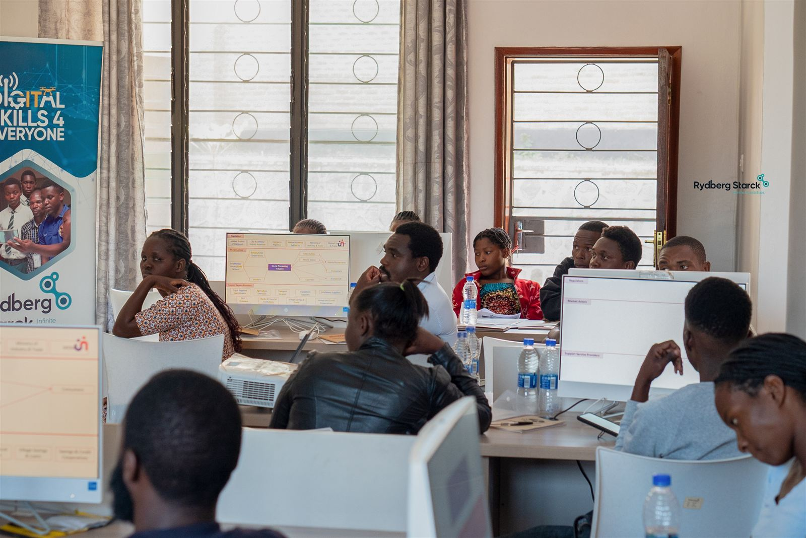
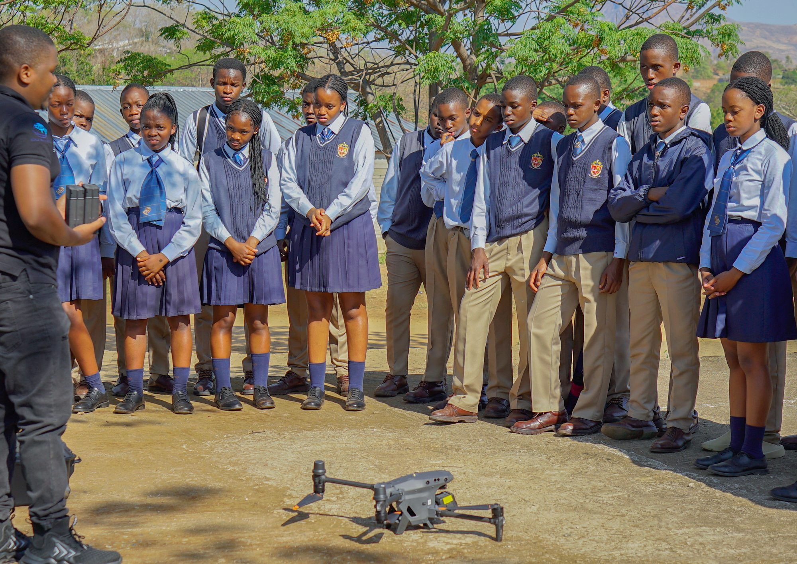
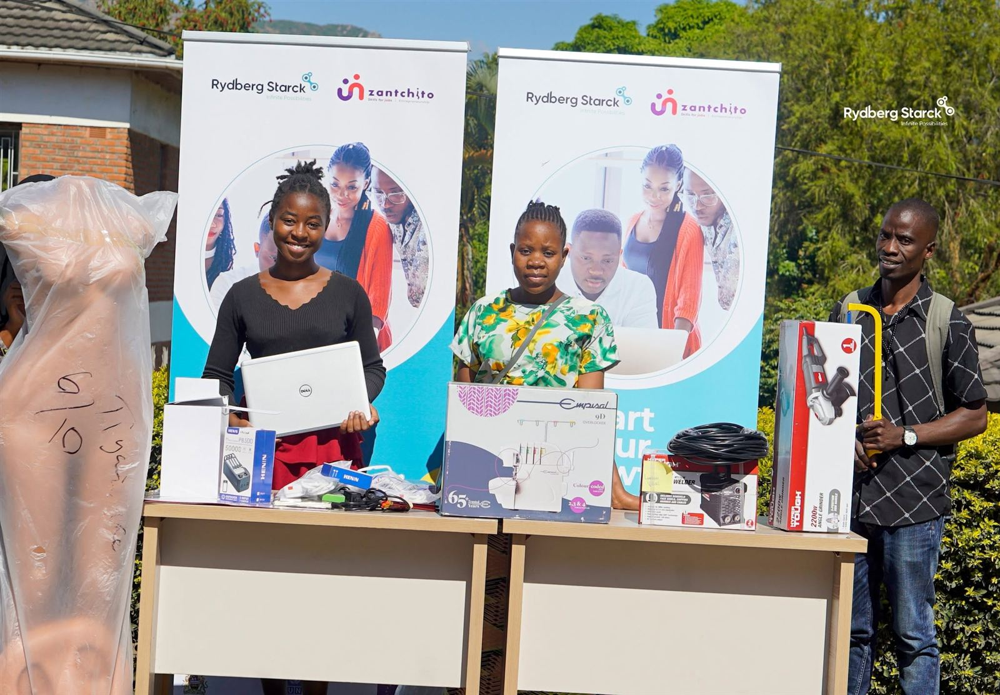
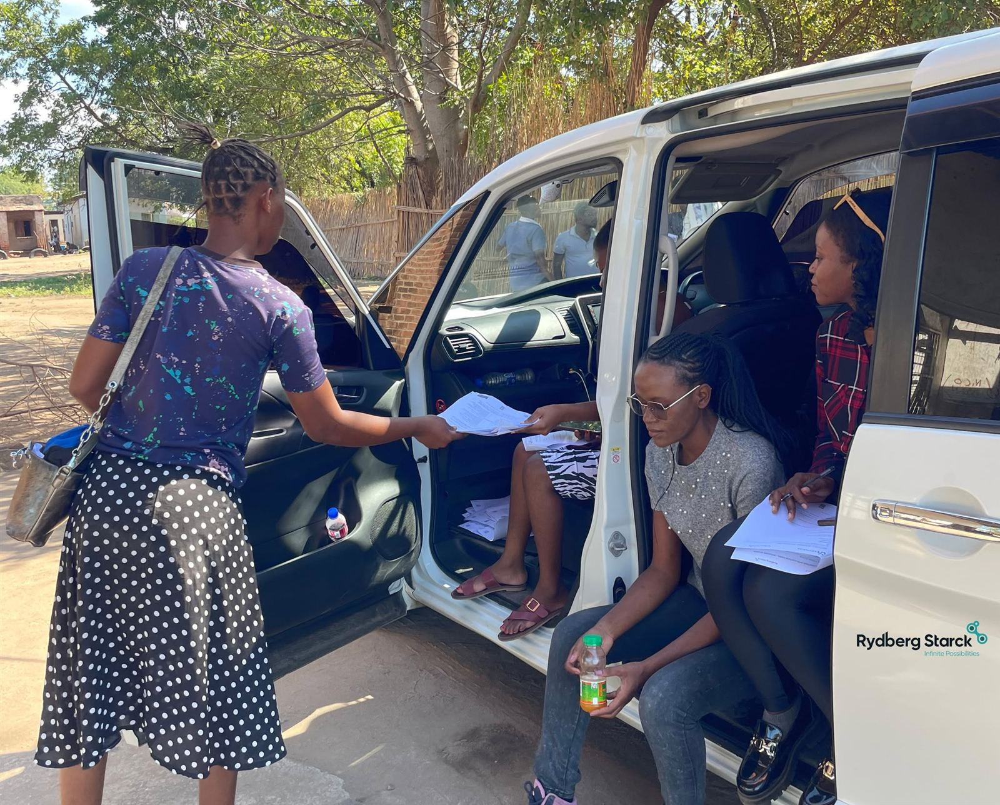

Catalyst · Capacity and opportunity
Skills to start. Support to grow.
Catalyst brings together learning, mentorship and enterprise support for people at different stages of their digital journey.
Catalyst · Program stories
Learning that moves the future forward.
Explore the work in motion, starting with Starck Flight Academy and the Kalibu Academy Drone Club. Each album offers a quick look at the learners, teams and communities building Malawi’s digital future.
Starck Flight Academy / Kalibu Academy Drone Club

Our programs
Different pathways. Practical skills.
Explore Catalyst programs for organizations, young people, entrepreneurs and communities.
Incubation · Zantchito Program
Incubation Program
Through the Zantchito Entrepreneurship and Access to Finance programme, Rydberg Starck works as a partner incubator, strengthening its business model and providing targeted incubation support to idea-stage entrepreneurs. The programme aims to help entrepreneurs build ventures that can grow into commercially sustainable businesses. Rydberg Starck’s work centres on inclusive access to Malawi’s digital economy through entrepreneurship, skills development and technology.
- ✦Recruitment and application stages
- ✦Training and mentorship
- ✦Distribution of items to incubates
Catalyst · Incubation
Zantchito Program
Through the Zantchito Entrepreneurship and Access to Finance programme, Rydberg Starck works as a partner incubator, strengthening its business model and providing targeted incubation support to idea-stage entrepreneurs. The programme aims to help entrepreneurs build ventures that can grow into commercially sustainable businesses. Rydberg Starck’s work centres on inclusive access to Malawi’s digital economy through entrepreneurship, skills development and technology.
Our photo story follows the programme from recruitment and applications through training, mentorship and distribution of items to incubates. The Post program gallery shares follow-up stories in this order: Bruce Francisco, Sezile Golozera, then Mark Isaac.
About the Zantchito incubation approach ↗ View the Zantchito gallery
Photo story
The Zantchito journey
Choose a stage, then move through the gallery photos. The images cover recruitment, training, mentorship, distribution and post-program participant updates.

Build capacity with Catalyst
Let’s talk about the right program for you.
Contact Rydberg Starck to discuss training, entrepreneurship, incubation or a community program.